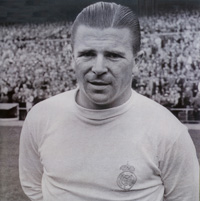
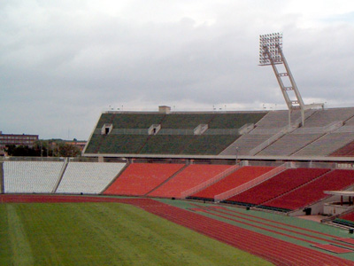

8. Ferenc Puskás Stadium

The design of the large football arena of Budapest was ready to carry out in 1896 in the framework of the first modern Olympics since Athens had waived its right. Sadly, neither Budapest could afford to organize this fantastic sports event. Although Budapest was awarded the 1920 Olympic Games by the IOC, World War I swept everything away. The construction site of the arena, on the contrary, was marked out. The 16 potential locations included Vérmező, Lágymányos – it seems to be known for failed sports investments, see 2006 European Swimming Championships – and Margaret Island. Despite the fact that a stadium had been something necessary to have under law in 1920, a shovelful of ground was not removed either. 1945 marked a turning point when the Communist Party accepted the construction budget of the arena, what’s more, labourers set out to work within 3 years. There was nothing fixed about the plan, Károly Dávid and József Pelikán changed their opinion and came forward with new ideas from day to day. Lots of volunteers turned up on the construction site, even outstanding sportsmen and sportswomen were enthusiastic about digging there, like for example Ferenc Puskás himself. Assemblies were manufactured in 7 factories, 664,000 m3 of ground was moved, 45,000 tons of concrete plus 2.5 tons of reinforced concrete were worked in – all this cost 160 million Ft at that time. The opening ceremony of the stadium was held on 20 August 1953. Impresseive successes followed: Honvéd wins 3-2 against Spartak Moscow, 24 world records, the Hungarian male national basketball team is European champion, and so forth. During the unforgettable 7-1 victory over the English 92,000 people rooted for the Golden Team. But this amazing record was certainly smashed pretty soon because 104,000 fans crowded the stands when the final score was 6-1 to Hungary against Austria. Then, as the stadium and Hungarian football lost their fame, so the supporters didn’t come. However, in 2006, Puskás Öcsi’s former club, the Real Madrid was able to breathe new life into the 50-year-old concrete walls.

During the last few decades the stadium has hosted several cultural events and megaconcerts. The upper stand was reinforced and the press box was covered during the restoration in the 1990's. The facility was renamed on 2 April 2002 after the legendary player Ferenc Puskás.
The building was in a very bad condition. Diverse plans were established for its restoration, expansion and reconstruction, however only the life-threatening upper stand was reinforced.
New stadium (2018)
The second Orbán-government accepted the conception of the reconstruction of the stadium on 4 November 2011, so a new stadium will have been built with 65 thousand seats by 2017.
The Hungarian Football Association applied with the new stadium for the right to be a venue of the European Football Cup in 2020. They applied for three group matches and one straight elimination match.
The plans were shown on 31 July 2014. The 68 thousand-seated stadium can be a venue for 20 different Olympic sport arts, moreover it will include a hotel, a conference-centre, a business centre, a sport's museum, a lab, some shops, a garage and a fitness centre. There will be a panorama running track upstairs and it will also have its own police station. According to the plans the stadium will have been finished by 2018. The costs reach about 90-100 billion Hungarian Forints.
The UEFA claimed on 19thSeptember 2014 that in the European Football Cup in 2020 the stadium could give place of three group matches and one of the eighth finals.